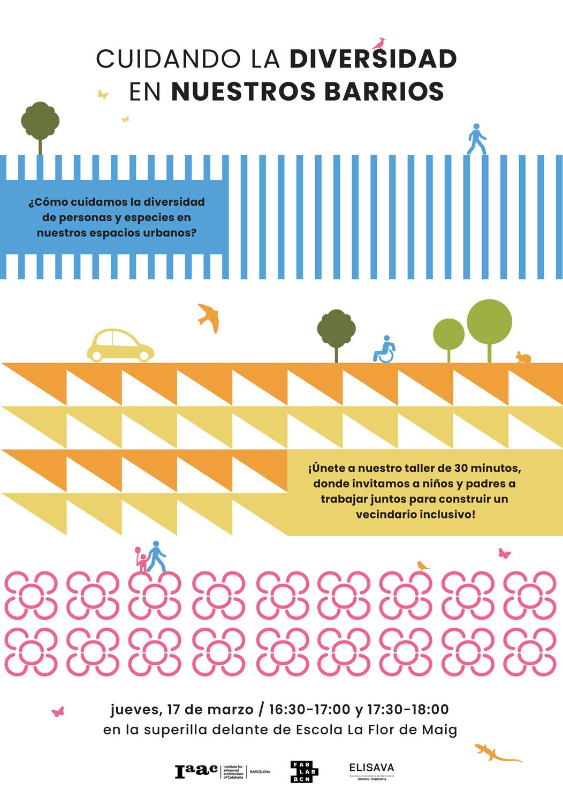
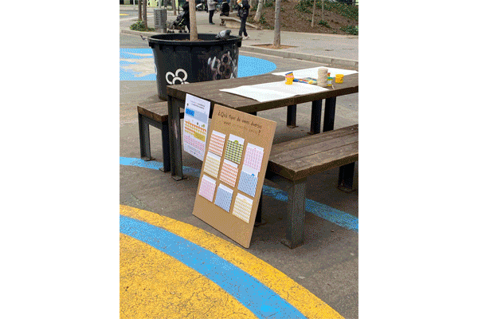
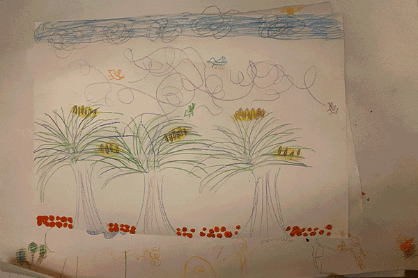
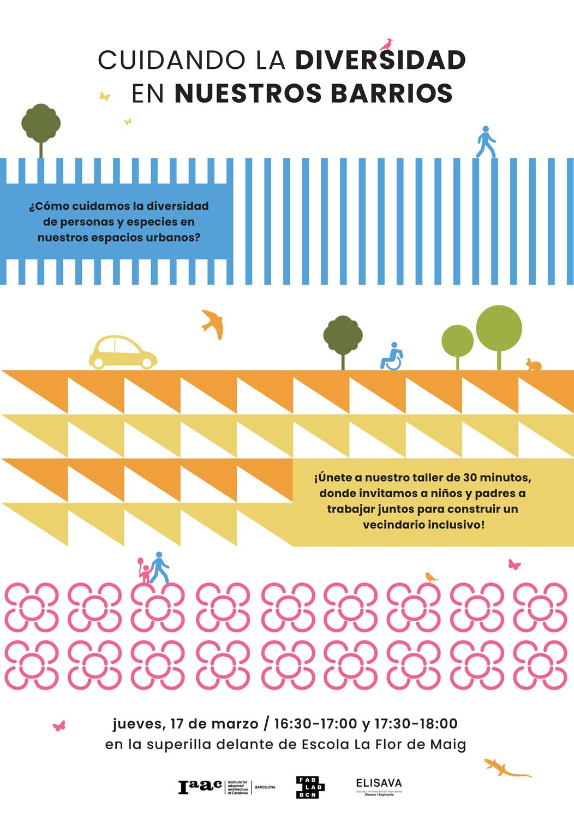
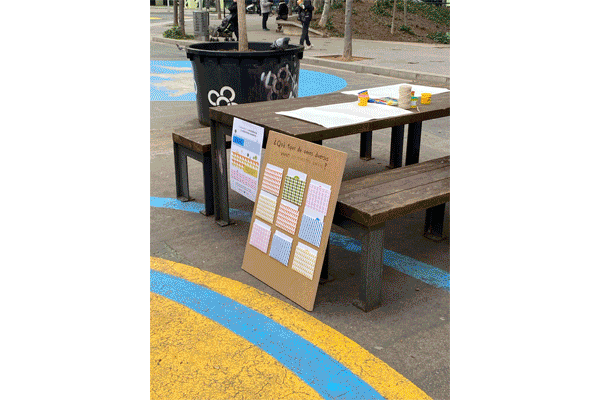
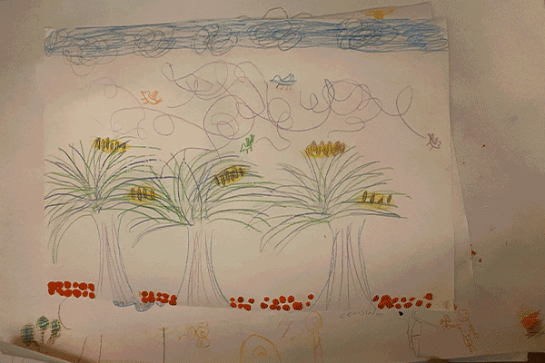

🗓 March 2022
How can we apply co-design within our immediate everyday spaces to build towards an inclusive and diverse future?
After the first intervention, I was interested in finding other ways to co-design with different groups of people (outside my demographic). I wanted to break the bubble of designers designing for other designers, and explore what it is like to design for and with others who are radically different from me.
During this time, I was developing an interest in deconstructing the idea of a Museum and reframing my neighrborhood as a Museum. Since Borka was aslo interested in working within the urban space, we decided to collaborate on our second intervention on a co-designing project that addresses diversity and inclusion within our immediate urban surroundings.
We discussed many ideas and topics before landing on the theme of using design as a tool for understanding other perspectives. We knew we wanted to design with diverse groups of people, whether it’s age, ability, culture, and focus on the topic of designing for our immediate urban spaces. During our research, we reached out to a few people including Clement and Roger from Aqui. With Aqui, we shared the projects we were working on and discussed approaches in participatory design. It was helpful to hear their perspective on this topic, since they’ve already conducted several interventions with this method.
We also reached out to Chiara and with her help we orgaznied a workshop with children from her kids’ school in Poblenou in front of the Superillas. We decided to work with children and their parents together, with an interest in gathering perspectives across generations and different age groups. Our two initial ideas were to focus on diversity of abilities (human) or diversity within species (human and non-human) and how we might build the Superilla that is inclusive to these agents. We decided to go with diversity in species because we were working with young children and had less than an hour for the workshop, which meant that tackling the subject of different human abilities might be too much. We wanted to make this an open co-designing workshop, where we gathered ideas from children and their parents on urban designs for diversity. We started out by brainstorming the agents that live within a city, researching the biodiversity reports published by the Adjunctament of Barcelona city. (https://ajuntament.barcelona.cat/atlesbiodiversitat/en/) and from there we selected 6 common non-human agents and added 3 human agents with different abilities (wheelchair, blind, and elderly). Once we confirmed the logistics of the workshop with Chiara, we started creating the framework, goals, and visual materials for the workshop. A key consideration was that the workshop had to be conducted in Spanish or Catalan, which neither of us spoke, and we had to ask for help. And it was determined that we only have 30minutes to conduct the workshop, so we had to reduce some steps (discussion) at the last minute.
Goal:
To understand the interdependence of humans and non-human agents within the urban space, and why this diversity is crucial in building better living spaces. Using imagination and embodied hands-on design methods with [children and parents], our aim is to generate empathy and empower them to co-create inclusive futures for humans and non-humans within the spaces we inhabit.
Participants:
During the making process, the participants were prompted to create an environment they imagined from the perspective of the chosen agent using crayons, clays sticks, and yarn. We wanted to diversify the types of materials so they wouldn’t be limited to 2-dimensional drawings.
Then in the last part, we expected to gather the imagined invironments and have a small discussion on the design choices that each participant made for the agents. We also created take-away maps with the map of the Superilla and diversity agent stickers for the kids to continue the activity and reflection at home after the workshop.
Finally, we wanted this workhsop to be one in a series. So taking our findings from this first co-design and planning workshop, we would extract our learning to apply for a following workshop (which we could possibly hold with a different group of people) that would involve building within the 3D space. We thought it would be interesting to work with diverse and different groups of people for each workshop to support the theme of co-designing.
The Urban Diversity Workshop

We recruited our classmate Anna to help translate and facilitate our workshop in Catalan. The day of the workshop was overcast and very windy, so we were worried if many parents and children would want to stay and participate, but we had great success with turnout. We prepared all of the materials, and did our best at trying to facilitate the workshop with Anna’s help. One thing I realized soon after we started was that children ages 5-8 (and especially after a full day of school) didn’t have the attention span to focus on the details of the workshop.
As we started choosing the agents, the children gravitated towards the animal and nature agents, leaving the three diverse human agents (wheelchair, elderly, and blind person). We tried to guide the kids to imagine from the perspectives of each of their selected agents. Many of the drawings contained natural elements like sky, tree, sun, and flowers. I had an assumption that these are things that they are used to drawing and I soon realized I had very little control over the outcome.
I realized how important it is to build the workshop for the people who will be participating and co-designing in it. In this instance, we learned that the prompts may have been too abstract to understand and the activity was too general to get the results we were looking for. Also, I acknowledge that I had an expected outcome and observed myself trying to unsuccessfully steer the activiy in that direction. Although I think we could have framed the workshop better, I believe a part of the learning from this co-design workshop was to let go of our expectations of what we want to see and be open to discovering new forms and ideas, which we can then figure out how to work with.

Following the workshop, we collected and photographed the outcomes (drawings) and discussed them amongst ourselves. Unfortunately, we didn’t have the time or the attention span of the children to discuss each of the drawings. As mentioned in a prior observation, most of the drawings had themes of nature. I photographed the drawings and extracted unique shapes from them on illustrator, turning them into vector outlines. I chose these shapes partially by visual interest and in part finding diverse elements.
With these shapes, we planned to create “building blocks” so we can use them in a following workshop to build with in the physical space. With Borka’s idea of using some foundational shapes (like hashtags) to create connections we can build on top of, we transformed these shapes into Rhino CNC cut files. We were able to cut these files before design dialogues 2 in order to have a small scale prototype of the shapes and test them out.

Design Intervention 2: Collective Design
How can we apply co-design within our immediate everyday spaces to build towards an inclusive and diverse future?
After the first intervention, I was interested in finding other ways to co-design with different groups of people (outside my demographic). I wanted to break the bubble of designers designing for other designers, and explore what it is like to design for and with others who are radically different from me.
During this time, I was developing an interest in deconstructing the idea of a Museum and reframing my neighrborhood as a Museum. Since Borka was aslo interested in working within the urban space, we decided to collaborate on our second intervention on a co-designing project that addresses diversity and inclusion within our immediate urban surroundings.
We discussed many ideas and topics before landing on the theme of using design as a tool for understanding other perspectives. We knew we wanted to design with diverse groups of people, whether it’s age, ability, culture, and focus on the topic of designing for our immediate urban spaces. During our research, we reached out to a few people including Clement and Roger from Aqui. With Aqui, we shared the projects we were working on and discussed approaches in participatory design. It was helpful to hear their perspective on this topic, since they’ve already conducted several interventions with this method.
We also reached out to Chiara and with her help we orgaznied a workshop with children from her kids’ school in Poblenou in front of the Superillas. We decided to work with children and their parents together, with an interest in gathering perspectives across generations and different age groups. Our two initial ideas were to focus on diversity of abilities (human) or diversity within species (human and non-human) and how we might build the Superilla that is inclusive to these agents. We decided to go with diversity in species because we were working with young children and had less than an hour for the workshop, which meant that tackling the subject of different human abilities might be too much. We wanted to make this an open co-designing workshop, where we gathered ideas from children and their parents on urban designs for diversity. We started out by brainstorming the agents that live within a city, researching the biodiversity reports published by the Adjunctament of Barcelona city. (https://ajuntament.barcelona.cat/atlesbiodiversitat/en/) and from there we selected 6 common non-human agents and added 3 human agents with different abilities (wheelchair, blind, and elderly). Once we confirmed the logistics of the workshop with Chiara, we started creating the framework, goals, and visual materials for the workshop. A key consideration was that the workshop had to be conducted in Spanish or Catalan, which neither of us spoke, and we had to ask for help. And it was determined that we only have 30minutes to conduct the workshop, so we had to reduce some steps (discussion) at the last minute.
Goal:
To understand the interdependence of humans and non-human agents within the urban space, and why this diversity is crucial in building better living spaces. Using imagination and embodied hands-on design methods with [children and parents], our aim is to generate empathy and empower them to co-create inclusive futures for humans and non-humans within the spaces we inhabit.
Participants:
- Elementary school kids
- Parents
- IAAC students (the facilitators as well)
- Introduction
- Co-designing
- Discussion
During the making process, the participants were prompted to create an environment they imagined from the perspective of the chosen agent using crayons, clays sticks, and yarn. We wanted to diversify the types of materials so they wouldn’t be limited to 2-dimensional drawings.
Then in the last part, we expected to gather the imagined invironments and have a small discussion on the design choices that each participant made for the agents. We also created take-away maps with the map of the Superilla and diversity agent stickers for the kids to continue the activity and reflection at home after the workshop.
Finally, we wanted this workhsop to be one in a series. So taking our findings from this first co-design and planning workshop, we would extract our learning to apply for a following workshop (which we could possibly hold with a different group of people) that would involve building within the 3D space. We thought it would be interesting to work with diverse and different groups of people for each workshop to support the theme of co-designing.
The Urban Diversity Workshop

We recruited our classmate Anna to help translate and facilitate our workshop in Catalan. The day of the workshop was overcast and very windy, so we were worried if many parents and children would want to stay and participate, but we had great success with turnout. We prepared all of the materials, and did our best at trying to facilitate the workshop with Anna’s help. One thing I realized soon after we started was that children ages 5-8 (and especially after a full day of school) didn’t have the attention span to focus on the details of the workshop.
As we started choosing the agents, the children gravitated towards the animal and nature agents, leaving the three diverse human agents (wheelchair, elderly, and blind person). We tried to guide the kids to imagine from the perspectives of each of their selected agents. Many of the drawings contained natural elements like sky, tree, sun, and flowers. I had an assumption that these are things that they are used to drawing and I soon realized I had very little control over the outcome.
I realized how important it is to build the workshop for the people who will be participating and co-designing in it. In this instance, we learned that the prompts may have been too abstract to understand and the activity was too general to get the results we were looking for. Also, I acknowledge that I had an expected outcome and observed myself trying to unsuccessfully steer the activiy in that direction. Although I think we could have framed the workshop better, I believe a part of the learning from this co-design workshop was to let go of our expectations of what we want to see and be open to discovering new forms and ideas, which we can then figure out how to work with.

Following the workshop, we collected and photographed the outcomes (drawings) and discussed them amongst ourselves. Unfortunately, we didn’t have the time or the attention span of the children to discuss each of the drawings. As mentioned in a prior observation, most of the drawings had themes of nature. I photographed the drawings and extracted unique shapes from them on illustrator, turning them into vector outlines. I chose these shapes partially by visual interest and in part finding diverse elements.
With these shapes, we planned to create “building blocks” so we can use them in a following workshop to build with in the physical space. With Borka’s idea of using some foundational shapes (like hashtags) to create connections we can build on top of, we transformed these shapes into Rhino CNC cut files. We were able to cut these files before design dialogues 2 in order to have a small scale prototype of the shapes and test them out.
